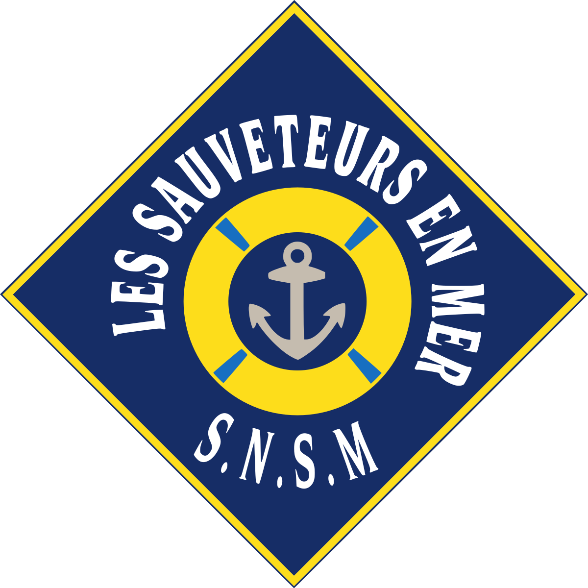
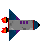

Sauveteur en mer
Sauveteurs
Tableau d'honneur
Qui etaient t'ils ?
que faisaient t'ils ?
Gratifications
Sortie en Mer
18'eme
19'eme
20'eme
21'eme
Stations
dunkerque
Gravelines
Malo-Les-Bains
Se connecter
Inscription
Prenom :
Nom :
Mail :
Mot de Passe :
deja inscrit ?
Coucou c'est Thomas Pesquet
